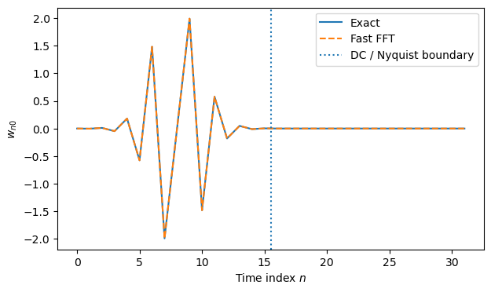

Fast calculation of the \(m=0\) wavelet coefficients
The WDM wavelet basis is labelled by the indices \(n\) and \(m\),
For \(m>0\), the production WDM transform uses the rapid frequency-domain algorithm based on a global FFT followed by short inverse FFTs.
The \(m=0\) column is special. It contains two different sets of edge wavelets:
\(0 \leq n < N_t/2\): wavelets centred at zero frequency;
\(N_t/2 \leq n < N_t\): wavelets centred at the Nyquist frequency.
These wavelets are separated in time by \(2\Delta T\) rather than \(\Delta T\). Previously they were calculated using truncated time-domain wavelets, making their accuracy and runtime dependent on the truncation parameter \(q\).
The \(m=0\) coefficients can instead be calculated exactly in the frequency domain using the same global FFT already required by the rest of the transform.
Let
For the zero-frequency wavelets,
Because the phase is periodic under \(l\rightarrow l+M\),
the \(N_t=2M\) frequency samples can be folded into \(M\) samples:
The complete set of zero-frequency coefficients is therefore obtained from one length-\(M\) inverse FFT,
The Nyquist-frequency terms have exactly the same structure, except that the frequency samples are taken around the Nyquist frequency rather than around zero:
Thus the two halves of the \(m=0\) column can be evaluated together using one batched length-\(N_t/2\) inverse FFT.
The production forward_transform_fft therefore calculates the \(m=0\) coefficients without a truncated time-domain window, so its forward transform is independent of \(q\). The reference and truncated methods still compute the \(m=0\) column from truncated time-domain wavelets, so for those the accuracy of the \(m=0\) column tracks the accuracy of the rest of the grid, and both improve as \(q\) grows.
[1]:
import numpy as np
import matplotlib.pyplot as plt
import WDM
[2]:
Nf = 32
N = 32 * Nf
dt = 1.0
# the exact transform is used below as the reference calculation.
wdm = WDM.WDM.WDM_transform(
dt=dt,
Nf=Nf,
N=N,
q=8,
)
M = wdm.Nt // 2
Comparison with the exact transform
The new frequency-domain calculation can be checked directly against forward_transform_exact, which evaluates the projection onto the complete wavelet basis without time-domain truncation.
We test the two parts of the packed \(m=0\) column separately:
the zero-frequency terms, \(0\leq n<N_t/2\);
the Nyquist-frequency terms, \(N_t/2\leq n<N_t\).
Since the new calculation is also exact, the differences should be limited by floating-point numerical precision rather than by the truncation parameter \(q\).
[3]:
rng = np.random.default_rng(1234)
x = rng.normal(size=wdm.N)
w_exact = wdm.forward_transform_exact(x)
w_fft = wdm.forward_transform_fft(x)
error_dc = np.max(
np.abs(w_fft[:M, 0] - w_exact[:M, 0])
)
error_Ny = np.max(
np.abs(w_fft[M:, 0] - w_exact[M:, 0])
)
error_all = np.max(
np.abs(w_fft - w_exact)
)
print(f"Maximum DC error: {error_dc:.3e}")
print(f"Maximum Nyquist error: {error_Ny:.3e}")
print(f"Maximum total error: {error_all:.3e}")
assert np.allclose(
w_fft[:M, 0],
w_exact[:M, 0],
rtol=1e-6,
atol=1e-6,
)
assert np.allclose(
w_fft[M:, 0],
w_exact[M:, 0],
rtol=1e-6,
atol=1e-6,
)
Maximum DC error: 4.996e-16
Maximum Nyquist error: 5.551e-16
Maximum total error: 1.131e-12
Independence from the truncation parameter \(q\)
The previous \(m=0\) calculation used the time-domain Meyer window truncated to
samples. Increasing \(q\) therefore improved the accuracy of the edge coefficients at additional computational cost.
The new calculation uses the compactly supported frequency-domain Meyer window directly. Consequently, no truncation is performed and the result of forward_transform_fft should be independent of \(q\).
We can verify this by constructing two WDM transforms with different values of \(q\) and applying them to exactly the same signal.
[4]:
wdm_q2 = WDM.WDM.WDM_transform(
dt=dt,
Nf=Nf,
N=N,
q=2,
)
wdm_q8 = WDM.WDM.WDM_transform(
dt=dt,
Nf=Nf,
N=N,
q=8,
)
w_q2 = wdm_q2.forward_transform_fft(x)
w_q8 = wdm_q8.forward_transform_fft(x)
error_q = np.max(
np.abs(w_q2[:, 0] - w_q8[:, 0])
)
print(f"Maximum m=0 difference between q=2 and q=8: {error_q:.3e}")
assert np.allclose(
w_q2[:, 0],
w_q8[:, 0],
rtol=1e-10,
atol=1e-10,
)
Maximum m=0 difference between q=2 and q=8: 0.000e+00
[5]:
print(
"Maximum total difference:",
np.max(np.abs(w_q2 - w_q8)),
)
Maximum total difference: 0.0
Edge coefficients for a low-frequency signal
As a visual check, consider a signal with substantial power close to zero frequency. This is precisely the regime in which the correct treatment of the \(m=0\) wavelets is important.
The fast frequency-domain coefficients should lie directly on top of those calculated using the exact wavelet basis.
[6]:
f = lambda u, a: np.sin(a * np.pi * u) * np.exp(-0.5 * u**2)
test_signal = f(
(wdm.times - wdm.T/2) / (wdm.T/16),
1,
)
w_exact = wdm.forward_transform_exact(test_signal)
w_fft = wdm.forward_transform_fft(test_signal)
n_vals = np.arange(wdm.Nt)
plt.figure(figsize=(7, 4))
plt.plot(
n_vals,
w_exact[:, 0],
label='Exact',
)
plt.plot(
n_vals,
w_fft[:, 0],
'--',
label='Fast FFT',
)
plt.axvline(
M - 0.5,
ls=':',
label='DC / Nyquist boundary',
)
plt.xlabel(r'Time index $n$')
plt.ylabel(r'$w_{n0}$')
plt.legend()
plt.show()
